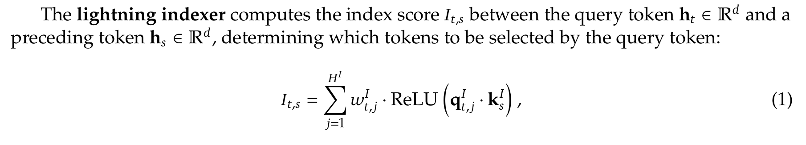

deepseekv3.2 arxiv
tilelang实现DSA
个人literature review
indexer
indexer forward

总之这就是公式。index的输入是qI[s,HI,dI]，kI[s,dI]，wI[s,HI]
- qI是多头query head（derive from query）
- wI表示这些head分别attach到kI后分数的权重（derive from query）
- kI是单头的key（derive from key）
在得到It,s(表示t位置上的query与s位置上的key的分数)后，沿着dim=−1(key位置维度)的方向进行topk选取得到topk_index和topk_logits
- topk_index[s,topk]：表示s位置上的query选取的topk的key的位置下标
- topk_logits[s,topk]：topk_logits[i,j]表示i位置上的query与topk_index[i,j]位置上的key之间的分数
- topk_score[s,topk]：topk_logits[s,topk]经过softmax得到的结果，是一个概率分布
indexer forward kernel
哲学：因为query是每个位置分别选取topk，所以无法像原始flashAttention一样将query分Q_BLOCK来进行计算。但是把query只用一个向量表示，与K_BLOCK进行向量乘矩阵在GPU上效率太低，所以这里用了多头HI的query（这就是之前infllmv2进行sparse选取和attention计算一样的哲学）
具体kernel实现的时候
- 首先在query位置上并行（因为不同位置上的query topk选取是相互独立的），每个线程块执行一个位置上的多头query的topk选取(具体而言，是qtI[HI,dI])
- 然后将kI分块为[BLOCK_K,dI]，流水线执行矩阵乘法，计算logit，用bitonic_sort在线执行排序以进行topk选取
- 具体而言，kernel在共享内存开辟了两个[2*topk]的数组，用于存放当前topk选取的index和logit。这里要求topk是BLOCK_K的整数倍
- BLOCK_K循环最开始的时候，先依次将计算出的logit和index数组(长度为[BLOCK_K])填入上述的两个寄存器数组
- 当填满的时候，执行bitonic_sort将logit降序排序
- 排序结束后，舍弃后topk的logit和index，之后每块计算出的logit和index再依次填入后topk的logit和index，填满后再跳到上一步
bitonic_sort
一种适合并行执行、基于比较的排序算法
indexer backward
loss=DKL(AttnScore[s,topk]∣∣topk_score[s,topk]) 二者都是概率分布
loss也可以表示为−∑AttnScoret,klog(topk_scoret,k)，这是交叉熵
在反传时，这两者等价
利用这个数值得到topk_score的梯度，进而在indexer进行反向传播
前传计算图：
这里记t为query位置，s=topk_indext,k是一个简写，h为query head下标，k为topk下标
qkt,h,s=qt,hI⋅ks
logitst,h,s=ReLU(qkt,h,s)（即t位置多头query attach到选中s位置的key的分数）
topk_logitt,k=∑hwt,h⋅logitst,h,s
topk_scoret,k=softmax(topk_logitt,k)
（反传无需考虑掩码因为前传已经保证了s≤t）
反传公式：
- ∂topk_logitt,k∂L=topk_scoret,k−AttnScoret,k
（这里topk_score为topk_logit经过softmax的结果）
- $dw=\frac{\partial L}{\partial w_{t,h}}\
=\sum_{k\in [0,topk)}\frac{\partial L}{\partial topk_logit_{t,k}}\frac{\partial topk_logit_{t,k}}{\partial w_{t,h}}\
=\sum_{k\in [0,topk)}(topk_score_{t,k}-AttnScore_{t,k})logits_{t,h,s}$
- $d\ logits=\frac{\partial L}{\partial logits_{t,h,s}}=\frac{\partial L}{\partial topk_logit_{t,k}}\frac{\partial topk_logit_{t,k}}{\partial logits_{t,h,s}}\
=(topk_score_{t,k}-AttnScore_{t,k})w_{t,h}$
- d qk=d logits⋅dReLU=0(logits=0)或d logits(logits>0)
- dq=∂qt,h,d∂L=∑s∂qkt,h,s∂Lqt,h,d∂qkt,h,s=∑s∂qkt,h,s∂Lks,d
- dk=∂ks,d∂L=∑t∑h∂qkt,h,s∂Lqt,h,d
indexer backward kernel
前传会存储topk_score，mla_sparse_attention会计算出AttnScore作为反传的参数
和前传一样，反传kernel在query的位置维度上并行，然后pipeline对topk分块进行处理
- 首先重新算出来logits与qk，dlogits通过topk_score与AttnScore算出
- dq和dw都是t位置上的，需要累加，所以在寄存器上开辟一段空间作为累加器
- dk是s位置上的，所以沿着topk循环的时候，需要对选中的dk进行原子加
note: 感觉在跑小规模实验的时候不需要改tilelang算子，这里反传直接用那个ref torch版本就好了，该损失函数也很好改，一行代码的事
MLA sparse attention
MLA forward kernel
MLA在topk选择了key位置之后的前传
note: 不过有点奇怪的是，sparse_mla_fwd.py第211行左右，它算Attention的时候，直接把传入的kv同时当k和v来进行计算，而没有进行类似MLA的upper_proj之类的（可能是因为autograd Function要求是无参数的？）
MLA topk reducesum
用于在反传的时候计算indexer backward所需要的AttnScore
AttnScoret,s：为计算t位置的query和s位置的key的相关性，首先有score=softmax(qkT)/sm_scale，形状为[S,H,S]，然后先再H维度上加和，再按照topk indice来gather，得到[S,topk]形状的p，再在topk维度上进行L1归一化，得到AttnScore
MLA backward kernel
DSA function
综合以上kernel，构建出autograd function
1
2
3
4
5
6
7
8
9
10
11
12
13
14
15
16
17
18
19
20
21
22
23
24
25
26
27
28
29
30
31
32
33
34
35
36
| class DSAFunction(torch.autograd.Function):
@staticmethod
def forward(
ctx,
q: torch.Tensor,
kv: torch.Tensor,
index_q: torch.Tensor,
index_k: torch.Tensor,
weights: torch.Tensor,
offsets: torch.Tensor,
topk: int,
dim_v: int,
sm_scale: Optional[float] = None,
):
topk_indices, index_score = indexer_topk_reducesum_interface(index_q, weights, index_k, topk, offsets)
o, lse = sparse_mla_fwd_interface(q, kv.unsqueeze(-2), topk_indices.unsqueeze(-2), offsets, sm_scale=sm_scale, d_v=dim_v)
ctx.save_for_backward(q, kv, index_q, index_k, weights, topk_indices, index_score, o, lse, offsets)
ctx.topk = topk
ctx.dim_v = dim_v
ctx.sm_scale = sm_scale
return o, topk_indices
@staticmethod
def backward(
ctx,
do: torch.Tensor,
_1: torch.Tensor,
):
q, kv, index_q, index_k, weights, topk_indices, index_score, o, lse, offsets = ctx.saved_tensors
attn_score = sparse_mla_topk_reducesum_interface(
q, kv.unsqueeze(-2), topk_indices.unsqueeze(-2), lse, offsets, dim_v=ctx.dim_v
).squeeze(-2)
dq, dkv = sparse_mla_bwd(q, kv.unsqueeze(-2), o, do, topk_indices.unsqueeze(-2), lse, offsets, sm_scale=ctx.sm_scale)
dindex_q, dweights, dindex_k = indexer_bwd_interface(index_q, weights, index_k, attn_score, index_score, topk_indices, offsets)
return dq, dkv.squeeze(-2), dindex_q, dindex_k, dweights, None, None, None, None
|